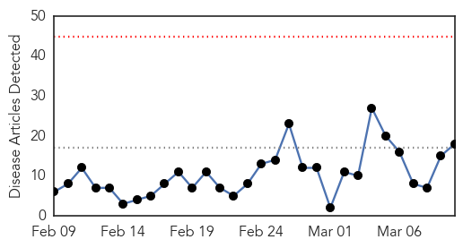

Influenza
30-Day Web Trend
0 alerts, 0 warnings

30-Day Twitter Trend
0 alerts, 0 warnings

Article Locations

Article Confidences

Top Articles:
- 1.000
- India tackles H1N1 influenza outbreak
- 0.976
- Doctor fears global flu pandemic "long overdue"
- 0.973
- Government seeks to rebuild trust after flu shot SNAFU
- 0.972
- The Start of the 1918 Flu Pandemic
- 0.969
- Flu epidemic leaves French hospitals in crisis
- 0.948
- Health notes: You can get two strains of flu in one season
- 0.925
- Two cases of bird flu confirmed by MDC
- 0.900
- Flu pandemic begins
- 0.897
- Global delay in international influenza vaccine
- 0.858
- KFVS12 News & Weather Cape Girardeau, Carbondale, Poplar Bluff
- 0.771
- Bird flu confirmed at 2nd turkey farm in Missouri
- 0.751
- March 10, 2015 Archives
- 0.751
- March 9, 2015 Archives
- 0.751
- March 9, 2015 Archives
- 0.751
- March 9, 2015 Archives
- 0.746
- News, Weather, Sports, Breaking News
- 0.528
- Missouri turkey farms hit by bird flu quarantined
- 0.512
- Avian flu confirmed at two facilities in Missouri
Top Tweets:
-
No tweets found for Mar 10, 2015
Dengue Fever
30-Day Web Trend
0 alerts, 0 warnings

30-Day Twitter Trend
0 alerts, 0 warnings

Article Locations
Article Confidences

Top Articles:
- 0.997
- Amid H1N1 scare, 3 dengue cases
- 0.952
- Fogging at City Hall as Basuki Comes Down With Dengue
- 0.944
- Dengue exposures unnoticed among Ghanaian children
- 0.940
- Governor Ahok comes down with dengue
- 0.934
- Governor Ahok Comes Down With Dengue
- 0.867
- Rainy weather spreads illness, sends more infants to hospitals
- 0.860
- PH spends less than P1B to fight neglected tropical diseases
- 0.803
- Big buzz about sterile males in the Florida Keys
- 0.614
- Rainy weather spreads illness, sends more infants to hospitals
Top Tweets:
-
No tweets found for Mar 10, 2015